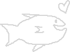
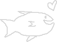

Why Tosatur?
"Tosatur" is a word in Afaarmiša. It is a verb meaning "to catch a fish." I chose it because it was a word that sounded nice, and I like fish.
"Tosatur" is a word in Afaarmiša. It is a verb meaning "to catch a fish." I chose it because it was a word that sounded nice, and I like fish.
